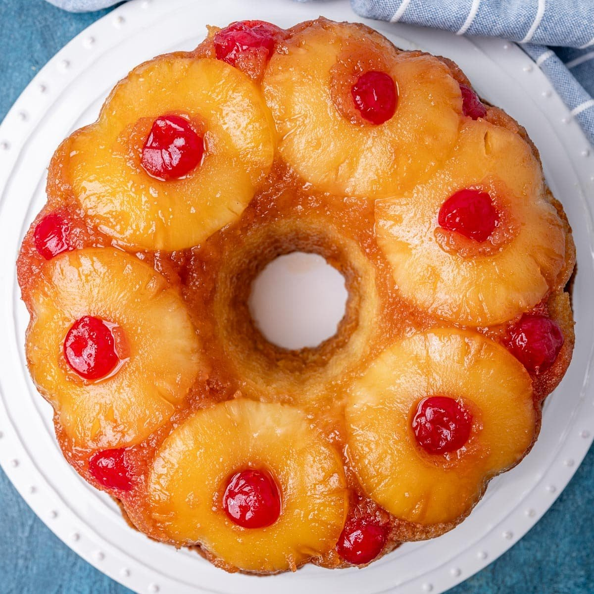

This recipe is adapted from "Delish" written by Rian Handler, and found on https://www.delish.com/cooking/recipe-ideas/a53072/easy-pineapple-upside-down-cake-recipe/

Photo by: Julie Clark, https://www.tastesoflizzyt.com/pineapple-upside-down-bundt-cake/, via Tastes of Lizzy T
Directions
Preheat oven to 350 degrees fahrenheit and grease round 9" cake pan.
Making the Topping
Mix butter with brown sugar and add to prepared cake pan. Let mixture spread to the edges, then add 7 pineapple rings. Place cherries inside and in between pineapple slices.
Making the Cake
In a small bowl, whisk together flour, baking powder, and salt. Set aside.
In a large bowl using a hand mixer, cream butter with sugars. Beat in egg, vanilla, and sour cream, then slowly beat in flour mixture and pineapple juice until just combined.
Spoon the batter over the pineapple, gently spreading out in an even layer.
Bake until cake is golden and a toothpick comes out clean, about 35 minutes.
Remove from oven, wait 5 minutes and flip cake upside-down onto serving platter.
Wait 30 seconds more, then carefully lift pan off. Let cool completely before slicing and serving.